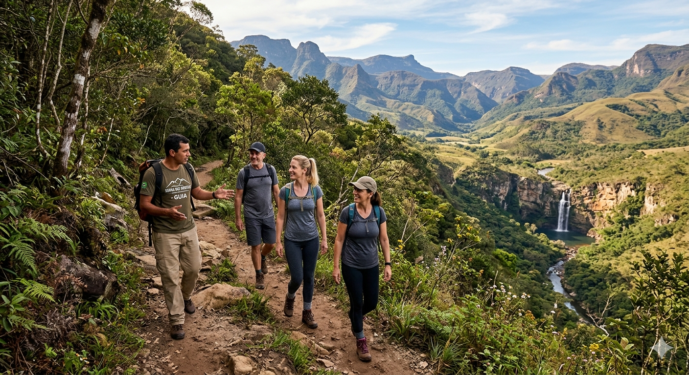

Trilha do Vento Sul
Conecte-se com a natureza em uma caminhada suave pelos arredores da pousada, entre mirantes e cachoeiras escondidas. Uma vivência guiada que ressalta a história da Serra das Veredas.
3h
Média
Guia, lanche e transporte
Mai/Set